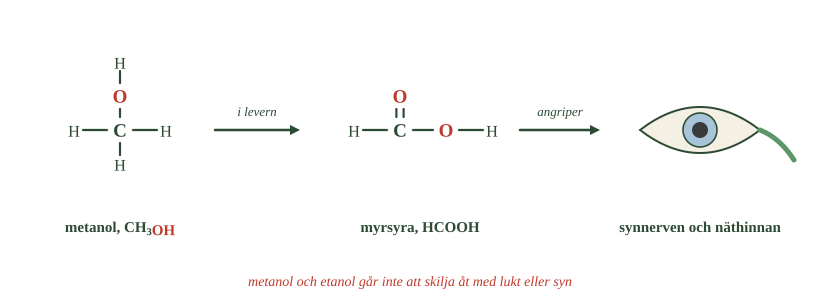
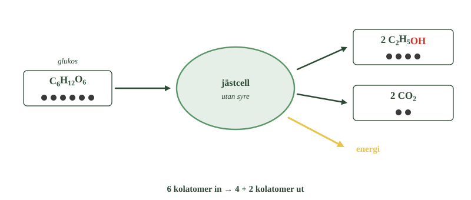
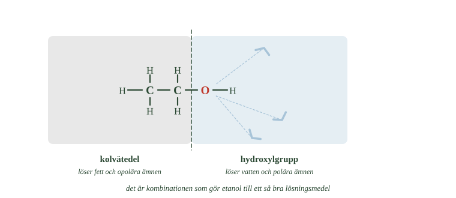

- Hur många atomer av varje slag finns i en metanolmolekyl?
- Varför fick metanol namnet träsprit?
- Vad bildas när metanol förbränns fullständigt?
- Vad omvandlar kroppen metanol till?
- Varför är det farligt att metanol liknar etanol?
De två enklaste alkoholerna är metanol och etanol.
Molekylerna skiljer sig knappt åt. Etanol har en kolatom och två väteatomer mer än metanol. Det är allt.
Båda är färglösa vätskor. Båda brinner. Båda används i industrin.
Ändå är skillnaden för människan enorm. Etanol finns i alkoholhaltiga drycker. Metanol är mycket giftigt och kan ge allvarliga skador redan i små mängder.
En kolatom och en OH-grupp
Metanol har formeln \(\ce{CH3OH}\).
Räkna atomerna: en kolatom, fyra väteatomer och en syreatom. Tre av väteatomerna sitter direkt på kolatomen. Den fjärde sitter i hydroxylgruppen, fast på syret.
Du kan se metanol som metan, \(\ce{CH4}\), där en väteatom bytts mot en OH-grupp.
Därför heter det träsprit
Förr framställdes metanol genom att hetta upp trä kraftigt utan luft.
Det låter bekant. Det är samma metod som används för att göra koks av stenkol, och som du mötte i förra delkapitlet. Utan syre kan materialet inte brinna — i stället drivs ämnen ut ur det.
Ur trä drevs bland annat metanol ut. Därför fick ämnet det gamla svenska namnet träsprit.
I dag framställs metanol industriellt ur enklare gaser.
Metanol används som bränsle och lösningsmedel
Metanol är en viktig råvara i industrin. Den används när man tillverkar andra kemiska ämnen och material.
Den löser också många ämnen och används därför som lösningsmedel.
Och den brinner:
Precis som för andra ämnen med kol och väte blir det koldioxid och vatten. Därför används metanol som bränsle i vissa motorer och maskiner.
Metanol är giftig
Metanol ser ut som etanol och luktar ungefär som etanol. Men den är mycket giftigare.
Det farliga är inte metanolen i sig. Det farliga är vad kroppen gör med den.
I levern bryts metanol ner till myrsyra. Myrsyran stör cellernas arbete, och allra känsligast är synnerven och näthinnan i ögat.
- Hur många syreatomer finns i den första molekylen, och hur många i den andra?
- Vad är det som händer i levern?
- Varför är det farligt att metanol luktar som etanol?

Metanolförgiftning kan därför ge synskador, och i svåra fall bestående blindhet. Allvarlig förgiftning kan leda till döden.
Det värsta är att man inte kan känna skillnaden. Metanol och etanol går inte att skilja åt genom att titta eller lukta.
Det säger något viktigt om kemi: två ämnen kan se likadana ut och ändå göra helt olika saker i kroppen.
- Hur många atomer av varje slag finns i en metanolmolekyl?
- Varför fick metanol namnet träsprit?
- Vad bildas när metanol förbränns fullständigt?
- Vad omvandlar kroppen metanol till?
- Varför är det farligt att metanol liknar etanol?
De två enklaste alkoholerna är metanol och etanol. Molekylerna skiljer sig bara med en kolatom och två väteatomer.
Båda är färglösa vätskor, båda brinner, båda används i industrin. Ändå är skillnaden för människan enorm: etanol finns i alkoholhaltiga drycker, medan metanol är mycket giftigt och kan ge allvarliga skador i små mängder.
En kolatom och en hydroxylgrupp
Metanol har formeln \(\ce{CH3OH}\) — en kolatom, fyra väteatomer och en syreatom. Tre av väteatomerna sitter på kolatomen, den fjärde i hydroxylgruppen.
Metanol kan alltså ses som metan där en väteatom bytts mot en OH-grupp.
Förr framställdes metanol genom kraftig upphettning av trä utan luft, och fick därför det äldre namnet träsprit. I dag framställs den industriellt ur enklare gaser.
Metanol används som bränsle och lösningsmedel
Metanol är en viktig industriråvara vid framställning av andra ämnen och material. Den löser också många ämnen och används därför som lösningsmedel.
Metanol brinner:
Vid fullständig förbränning bildas koldioxid och vatten, precis som för andra ämnen med kol och väte.
Därför används metanol som bränsle i vissa motorer och industriella processer.
Metanol är giftig
Metanol liknar etanol till utseende och lukt, men är betydligt giftigare.
Det farligaste är inte metanolen själv utan vad kroppen gör med den. I levern bryts metanol ner till myrsyra, som stör cellernas funktion. Särskilt känsliga är synnerven och näthinnan.
Metanolförgiftning kan därför ge synskador och i svåra fall bestående blindhet. Allvarlig förgiftning kan leda till döden.
En särskild fara är att metanol och etanol inte går att skilja åt med sinnena. Man kan inte se eller lukta vilken vätska man har framför sig.
Det visar något viktigt: två ämnen kan likna varandra utanpå och ändå påverka kroppen helt olika.
Det är mellanprodukten som gör metanol farlig
Standardtexten säger att metanol bryts ner till myrsyra i levern. Det stämmer, men steget däremellan är utelämnat — och det är det steget som förklarar varför förgiftningen ser ut som den gör.
Nedbrytningen sker i två steg, och båda utförs av samma enzymer som normalt tar hand om etanol.
Först oxideras metanol till formaldehyd. Det är ett mycket reaktivt ämne som binder till proteiner och skadar celler snabbt.
Sedan oxideras formaldehyden vidare till myrsyra, som i kroppens miljö föreligger som jonen formiat.
Det är formiatet som gör den egentliga skadan, och det gör den på ett specifikt sätt: det blockerar ett av de enzymer cellerna använder för att utvinna energi ur syre. Celler med hög energiförbrukning drabbas först — och synnerven är en av kroppens mest energikrävande vävnader.
Förloppet förklarar också ett obehagligt drag hos metanolförgiftning: den kommer försenat. De första timmarna märks bara något som liknar vanlig berusning, eftersom metanolen ännu inte hunnit brytas ner. Symtomen kommer efter tolv till tjugofyra timmar, när formiatet hunnit byggas upp.
Behandlingen följer direkt av kemin. Ger man patienten etanol upptar den samma enzymer, och metanolen hinner inte omvandlas utan lämnar kroppen oförändrad. I dag används oftare ett läkemedel som blockerar enzymet helt, men principen är densamma.
Om modellen. "Metanol är giftig" är sant men missvisande. Metanolmolekylen i sig är ungefär lika harmlös som etanol. Giftet tillverkas i kroppen, av kroppens egna enzymer, och botemedlet är att hindra kroppen från att göra det.
- Vad använder jästsvampen som energikälla?
- Under vilka förhållanden bildas etanol i stället för koldioxid och vatten?
- Vad bildas av en enda glukosmolekyl?
- Vilken av produkterna vill man åt när man bakar?
- Varför stannar jäsningen av sig själv?
Jästsvampar äter socker
Etanol kan bildas på biologisk väg. Processen kallas jäsning.
Jäst är en svamp. Som alla organismer behöver den energi, och den får sin energi ur glukos — samma druvsocker som växterna bildar vid fotosyntesen.
När det finns gott om syre använder jästen syret, precis som du gör. Men när syret tar slut gör den något annat: den bryter ner glukosen ändå, fast bara en bit på vägen, och det som blir över är etanol och koldioxid.
En glukosmolekyl ger alltså två etanolmolekyler och två koldioxidmolekyler.
- Räkna prickarna som går in och de som kommer ut.
- Hur många etanolmolekyler bildas av en glukosmolekyl?
- Vad är det som gör att jästen bildar etanol i stället för koldioxid och vatten?

Du har mött en syrefri nedbrytning förut: metanbildningen i kärret. Där gav andra mikroorganismer ett annat resultat. Hos jäst blir det etanol.
I degen vill man åt koldioxiden
När du bakar tillsätter du jäst i degen. Jästen hittar socker i mjölet och sätter igång.
Det du är ute efter är koldioxiden. Gasen bildar små bubblor som fastnar i degen, och därför jäser den och blir luftig.
Etanolen som bildas samtidigt vill du inte ha. Men det löser sig av sig självt — när brödet gräddas avdunstar nästan all etanol.
I vin och öl vill man åt etanolen
Vid framställning av vin och öl är det tvärtom.
Där är etanolen det man är ute efter, och koldioxiden är oftast biprodukten. I vissa drycker vill man behålla en del av koldioxiden ändå — det är den som ger bubblorna.
Samma kemiska process alltså, men två olika ändamål. Vilken produkt du vill ha avgör hur du gör.
Jäsningen tar slut av sig själv
Jästsvampar tål inte hur mycket etanol som helst. Etanolen är giftig även för dem.
När halten stiger blir miljön allt sämre för jästcellerna, och vid ungefär 12 till 15 procent stannar jäsningen helt.
Det sätter en naturlig gräns. En dryck kan inte bli starkare än så bara genom jäsning.
Vill man ha högre halt måste etanolen skiljas från vattnet. Det görs genom destillation.
Etanol kokar vid 78 °C och vatten vid 100 °C. Värmer man blandningen kommer alltså mer etanol än vatten att förångas, och ångan blir starkare än vätskan den kom ifrån.
Det är samma princip som i fraktioneringstornet i förra delkapitlet: ämnen med olika kokpunkt kan separeras.
- Vad använder jästsvampen som energikälla?
- Under vilka förhållanden bildas etanol i stället för koldioxid och vatten?
- Vad bildas av en enda glukosmolekyl?
- Vilken av produkterna vill man åt när man bakar?
- Varför stannar jäsningen av sig själv?
Jäst omvandlar socker till etanol
Etanol kan bildas genom en biologisk process som kallas jäsning.
Jästsvampar använder glukos som energikälla. När det finns ont om syre omvandlar de glukosen till etanol och koldioxid:
En glukosmolekyl ger alltså två etanolmolekyler och två koldioxidmolekyler.
Vi har mött en syrefri nedbrytning förut — metanbildningen i kärr och bottenslam. Där gav andra mikroorganismer en annan slutprodukt. Hos jäst blir det etanol.
Jäsningen används i bakning och i drycker
I en deg är det koldioxiden man vill åt. Gasen bildar bubblor som fastnar i degen och får den att jäsa. Etanolen som bildas samtidigt avdunstar till största delen vid gräddningen.
I vin och öl är det tvärtom: där är etanolen den önskade produkten.
Samma process, två olika ändamål — beroende på vilken produkt man är ute efter.
Jäsningen stannar av sig själv
Jästsvampar tål inte hur mycket etanol som helst. När halten stiger blir miljön allt sämre för dem, och vid ungefär 12 till 15 procent stannar jäsningen.
Det sätter en naturlig gräns för hur stark en dryck kan bli enbart genom jäsning.
Vill man högre måste etanolen skiljas från vattnet, och det görs genom destillation. Etanol kokar vid 78 °C och vatten vid 100 °C, så ångan blir rikare på etanol än vätskan den kom ifrån.
Det är samma princip som i fraktioneringstornet i förra delkapitlet: ämnen med olika kokpunkt kan separeras.
Jäsningen är cellandning som stannat halvvägs
Standardtexten beskriver jäsning som en process där jästen bryter ner glukos utan syre. Det stämmer, men formuleringen antyder att det är en annan process än cellandning. Det är det inte — det är samma process, avbruten.
Både cellandning och jäsning börjar likadant. Glukosmolekylen med sina sex kolatomer klyvs i två delar med tre kolatomer var, i en serie steg som inte kräver syre alls. Redan där frigörs lite energi.
Sedan skiljs vägarna.
Med syre fortsätter nedbrytningen hela vägen. Kolatomerna blir koldioxid, väteatomerna blir vatten, och cellen får ut ungefär 30 ATP per glukosmolekyl.
Utan syre går det inte. Kedjan stannar, och cellen sitter kvar med halvfärdiga molekyler som måste tas om hand. Jästens lösning är att omvandla dem till etanol och koldioxid och släppa ut dem.
Utbytet blir 2 ATP per glukosmolekyl. Ungefär en femtondel.
Etanolen är alltså inte en produkt jästen vill ha. Det är avfall — något cellen gör sig av med för att kunna fortsätta arbeta.
Det förklarar varför jäsningen stannar vid femton procent. Jästen förgiftas långsamt av sitt eget avfall, i en miljö där det inte kan spädas ut.
Samma sak händer i dina muskler vid hård ansträngning. När syret inte räcker till gör muskelcellen samma sak som jästen — fast slutprodukten blir mjölksyra i stället för etanol.
Om modellen. Att beskriva jäsning som "nedbrytning utan syre" är korrekt men gör den till ett eget fenomen. Den är i själva verket samma nedbrytning som cellandningen, avbruten där syret skulle ha tagit vid. Och priset för avbrottet är att nästan all energi lämnas kvar i etanolen — vilket förresten är exakt därför etanol brinner så bra.
- Vilka två delar består etanolmolekylen av?
- Varför kan etanol lösa så många olika ämnen?
- Vad menas med att etanol kan framställas ur biomassa?
- Varför räknas kolet i etanol annorlunda än kolet i bensin?
- Vad omvandlas etanol till i levern?
Molekylen har två olika ändar
Etanol är ett ovanligt bra lösningsmedel, och skälet är molekylens form.
Ena änden är hydroxylgruppen. Den samverkar starkt med vatten — den delen är vattenvänlig.
Andra änden är två kolatomer med sina väteatomer. Den liknar ett litet kolväte, och den samverkar med ämnen som inte löser sig i vatten — fett, oljor, lacker.
De flesta lösningsmedel kan bara det ena. Etanol kan båda.
- Vilken del av molekylen dras vattenmolekylerna mot?
- Var går den streckade linjen?
- Vad skulle hända om kolvätedelen var mycket längre?

Därför finns etanol i så många produkter
Eftersom etanol löser både vattenlösliga och fettlösliga ämnen används den i mängder av sammanhang.
Parfym. Färger och lacker. Rengöringsmedel. Läkemedel. Krämer och andra kosmetiska produkter.
I många av dem är etanolen inte det man vill ha — den är det som får de andra ämnena att hålla sig blandade.
Etanol kan användas som bränsle
Etanol brinner:
Den används i motorbränslen, i T-röd och i spolarvätska.
Här finns en viktig skillnad mot bensin och diesel. Etanol kan framställas ur biomassa — växter som innehåller socker eller stärkelse.
Växterna tog upp sitt kol ur luften genom fotosyntesen för något år sedan. När etanolen brinner går kolet tillbaka dit. Kolet stannar alltså i det snabba kretsloppet.
Fossilt kol har varit borta i miljontals år. Det är hela skillnaden.
Men det betyder inte att etanol automatiskt är klimatneutral. Odling, gödsel, transporter och framställning kräver också energi. Det som skiljer är kolatomernas ursprung.
Etanol är också giftigt
Att etanol finns i drycker betyder inte att ämnet är ofarligt.
Etanol påverkar hjärnan och nervsystemet. Kroppen arbetar därför för att bli av med det.
Nedbrytningen sker i levern. Där omvandlas etanol till ättiksyra, som kroppen kan använda vidare i sin ämnesomsättning.
Levern klarar bara en viss mängd per timme. Kommer det etanol snabbare än den hinner brytas ner stiger halten i blodet.
Två molekyler, två helt olika slut
Jämför metanol och etanol en sista gång.
Skillnaden mellan molekylerna är en kolatom och två väteatomer.
Men kroppen bryter ner dem olika, och resultatet blir helt olika. Metanol blir myrsyra som angriper synen. Etanol blir ättiksyra som kroppen kan använda.
Så små skillnader i en molekyl kan alltså ge så stora skillnader i vad som händer i kroppen.
- Vilka två delar består etanolmolekylen av?
- Varför kan etanol lösa så många olika ämnen?
- Vad menas med att etanol kan framställas ur biomassa?
- Varför räknas kolet i etanol annorlunda än kolet i bensin?
- Vad omvandlas etanol till i levern?
Etanol är ett bra lösningsmedel
Etanol är ovanligt användbar som lösningsmedel, eftersom molekylen har två delar med olika egenskaper.
Hydroxylgruppen samverkar starkt med vatten — den delen är vattenvänlig. Resten av molekylen liknar ett litet kolväte och samverkar med ämnen som inte löser sig i vatten.
Därför kan etanol lösa både vattenlösliga ämnen och sådana som vatten löser dåligt.
Det gör etanol användbar i parfym, färger, lacker, rengöringsmedel, läkemedel och kosmetika.
Etanol kan användas som bränsle
Etanol brinner:
Den används i motorbränslen och i tekniska produkter som T-röd och spolarvätska.
En viktig skillnad mot fossila bränslen är att etanol kan framställas ur biomassa — växter som innehåller socker eller stärkelse. Växterna tog nyligen upp sitt kol ur luften genom fotosyntesen, och när etanolen brinner går kolet tillbaka dit.
Kolet ligger alltså i det snabba kretsloppet, till skillnad från kolet i bensin och naturgas.
Det betyder inte att etanol automatiskt är klimatneutral. Odling, gödsel och transporter kräver också energi. Men kolatomernas ursprung är ett annat.
Etanol är också giftigt
Att etanol finns i drycker betyder inte att ämnet är ofarligt.
Etanol påverkar hjärnan och nervsystemet, och kroppen arbetar för att bryta ner det. Nedbrytningen sker i levern, där etanol omvandlas till ättiksyra som kroppen kan använda vidare.
Kroppen klarar bara en begränsad mängd per timme. Tillförs etanol snabbare än den bryts ner stiger halten i blodet.
Metanol och etanol visar tillsammans något viktigt: molekylerna skiljer sig med en enda kolatom, men kroppen bryter ner dem på olika sätt och resultatet blir helt olika.
Levern har en flaskhals, och den sitter i mitten
Standardtexten säger att etanol bryts ner till ättiksyra i levern och att levern bara klarar en viss mängd per timme. Båda delarna stämmer. Men var flaskhalsen sitter, och varför, är mer upplysande.
Nedbrytningen sker i två steg, precis som för metanol.
Först omvandlas etanol till acetaldehyd, av samma enzym som annars tar hand om metanol. Acetaldehyd är reaktivt och giftigt — det är det som ger huvudvärk och illamående dagen efter.
Sedan omvandlas acetaldehyden till ättiksyra, som i kroppen föreligger som acetat. Det ämnet är ofarligt och går rakt in i ämnesomsättningen.
Flaskhalsen sitter i det första steget. Enzymet arbetar med ungefär konstant hastighet oavsett hur mycket etanol som finns — det är redan fullbelagt vid låga halter. Därför bryts etanol ner med en jämn takt på ungefär en standardglas i timmen, oberoende av hur mycket man druckit.
Det skiljer sig från hur de flesta ämnen bryts ner, där hastigheten stiger med koncentrationen.
Andra steget går däremot fort hos de flesta. Men inte hos alla: ungefär en tredjedel av världens befolkning, framför allt i östra Asien, har en variant av det andra enzymet som arbetar långsamt. Då hopar sig acetaldehyden, och personen blir röd i ansiktet och mår illa redan av små mängder.
Om modellen. "Levern bryter ner etanol" är sant men döljer att det är två olika enzymer med olika hastigheter, och att det är skillnaden mellan dem som avgör hur någon mår. Det förklarar både varför nedbrytningen har en fast takt och varför människor reagerar så olika.
Laddar övningskort…
Laddar frågor ...